Ujaval Gandhi
Ujaval Gandhiایجاد یک نقشه حوضه رودخانه رنگی (QGIS3)¶
در این آموزش، ما گردش کار QGIS را برای ایجاد نقشه های هنری رودخانه برای کشور یا منطقه خود با استفاده از داده های هیدرولوژیکی در دسترس می آموزیم.
توجه
این آموزش از نقشه های زیبای تولید شده توسط Grasshopper Geography الهام گرفته شده است. من صاحب یکی از چاپ های آنها هستم و شما نیز می توانید با خرید یکی از نقشه های آنها از "فروشگاه آنلاین <https://www.etsy.com/shop/GrasshopperGeography>" از کار آنها حمایت کنید.
بررسی اجمالی کار¶
در این آموزش، لایه های داده حوضه ها و رودخانه ها را از HydroSHEDS می گیریم و یک نقشه حوضه برای رودخانه های هند ایجاد می کنیم.

مهارت های دیگری که یاد خواهید گرفت¶
نحوه اختصاص دادن طرح به یک لایه برداری با طرح نادرست یا گم شده است.
چگونه چندین لایه را در یک GeoPackage اضافه کنیم.
چگونه یک نشان «ساخته شده با QGIS» را به نقشه خود اضافه کنید.
داده ها را دریافت کنید¶
HydroSHEDS مجموعه داده های هیدرولوژیکی جهانی را برای کاربردهای منطقه ای و جهانی فراهم می کند. لایه های داده از DEM شرطی شده هیدرولوژیکی از SRTM مشتق شده اند.
مرزهای حوضه¶
HydroBasins مرزهای چند ضلعی حوضه ها را برای قاره های مختلف فراهم می کند. مرزها سلسله مراتبی هستند - هر حوضه در سطح N بیشتر به حوضه های کوچکتر در سطح N+1 تقسیم می شود. برای این آموزش از مرزهای حوضه سطح 6 استفاده می کنیم. بسته به منطقه و نوع نقشه ای که می خواهید ایجاد کنید، می توانید از سطوح مختلف استفاده کنید. از صفحه HydroBASINS دیدن کنید و فایل فشرده را برای منطقه خود دانلود کنید.
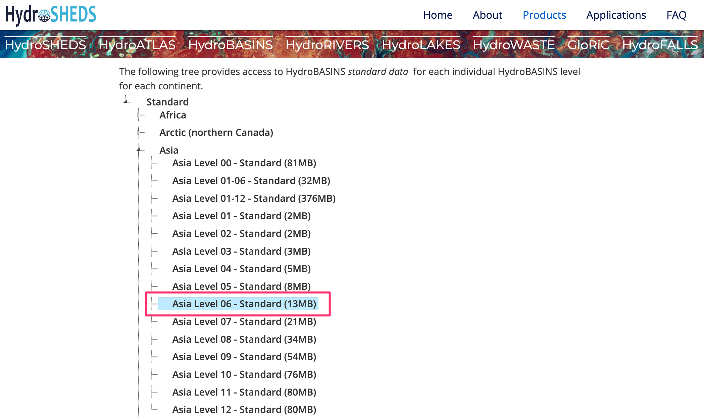
توجه
HydroSHEDS basin boundaries are derived from SRTM data which is over 20 years old at this point. The basin boundaries may not match the official basin boundaries in your region. You can substitute HydroBasins data with polygons from official sources when available.
شبکه رودخانه¶
HydroRIVERS یک شکل فایل خطی را ارائه می دهد که شبکه رودخانه را نشان می دهد. از صفحه «HydroRIVERS <https://www.hydrosheds.org/products/hydrorivers>» دیدن کنید و فایل فشرده را برای منطقه مورد علاقه خود دانلود کنید.

مرز اداری¶
ما دادههای HydroSHEDS را در مرز منطقه انتخابی شما برش میدهیم. در این آموزش می خواهیم نقشه حوضه رودخانه هند را ایجاد کنیم، بنابراین شکل فایل مرزی را از Survey of India دریافت می کنیم. از صفحه «نقشه های کلی هند <https://surveyofindia.gov.in/pages/outline-maps-of-india>» دیدن کنید و فرمت برداری مرز بین المللی هند را دانلود کنید. اگر به مرزهای سرپرست برای سایر کشورها یا ایالت ها نیاز دارید، می توانید آنها را از «GADM <https://gadm.org/>`_ یا «geoBoundaries <https://www.geoboundaries.org/>`_ دریافت کنید.

پس از دانلود تمامی فایل ها، آنها را از حالت فشرده خارج کرده و در یک پوشه کپی کنید. اکنون باید 3 شکل فایل داشته باشید: hybas_as_lev06_v1c.shp, HydroRIVERS_v10_as.shp و مرزهای مدیریتی `polymap15m_area.shp`.

منابع داده: [HYDROSHEDS]، [SOI]
روش¶
QGIS را باز کنید و فایل های دانلود شده را در QGIS Browser پیدا کنید. «hybas_as_lev06_v1c.shp» و «HydroRIVERS_v10_as.shp» را روی بوم بکشید و رها کنید.
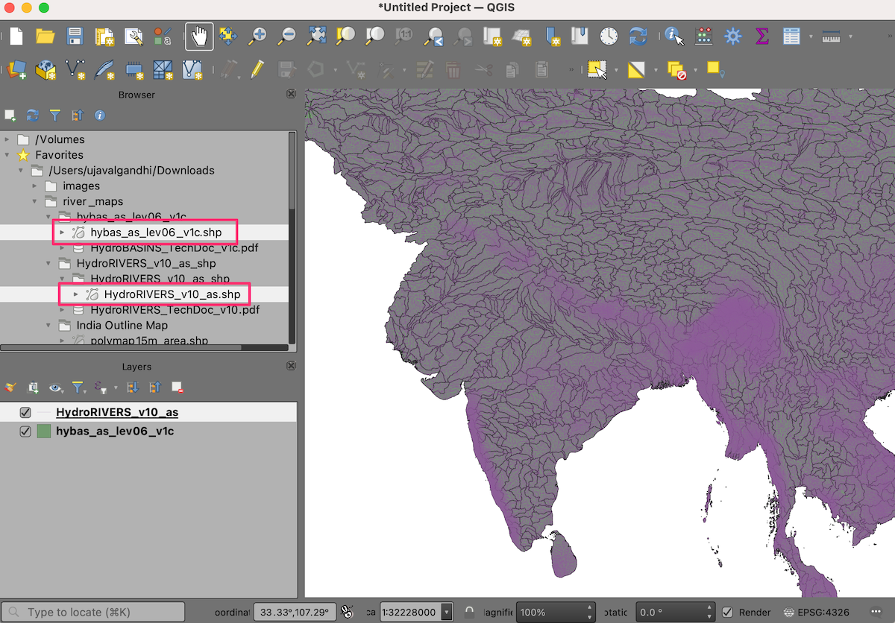
شکل فایل مرزهای اداری «polymap15m_area.shp» را پیدا کنید و آن را روی بوم بکشید و رها کنید.

لایههای داده HydroSHEDS دارای ویژگیهایی با هندسههای نامعتبر هستند، بیایید در ادامه آنها را اصلاح کنیم. جعبه ابزار پردازش را از باز کنید. ابزار :menuselection:'Vector geometry --> Fix geometries' را جستجو و پیدا کنید. برای راه اندازی آن دوبار کلیک کنید.

توجه
می توانید آموزش Handling Invalid Geometries (QGIS3) را مرور کنید تا در مورد علل و راه حل های هندسه های نامعتبر بیشتر بدانید.
«hybas_as_lev06_v1c» را به عنوان :guilabel:` لایه ورودی انتخاب کنید. روی دکمه ... در کنار :guilabel:` هندسه ثابت کلیک کنید و Save to GeoPackage... را انتخاب کنید.

به مکانی که میخواهید دادههای خروجی را ذخیره کنید، بروید و نام «data.gpkg» را وارد کنید. روی :guilabel:'Save' کلیک کنید. از شما خواسته می شود که یک :guilabel:` نام لایه را وارد کنید. "حوضه_اصلاح"" را وارد کنید. روی OK کلیک کنید. سپس روی Run کلیک کنید تا الگوریتم اجرا شود و لایه خروجی تولید شود.
مرحله را برای لایه «HydroRIVERS_v10_as» تکرار کنید. همان GeoPackage «data.gpkg» را که در مرحله قبل ایجاد شد، انتخاب کنید. اگر پیامی دریافت کردید که نشان میدهد فایل رونویسی میشود، نگران نباشید. QGIS فایل را بازنویسی نمی کند، اما یک لایه جدید به همان GeoPackage اضافه می کند. این بار از «rivers_fixed» به عنوان :guilabel:«نام لایه» استفاده کنید.
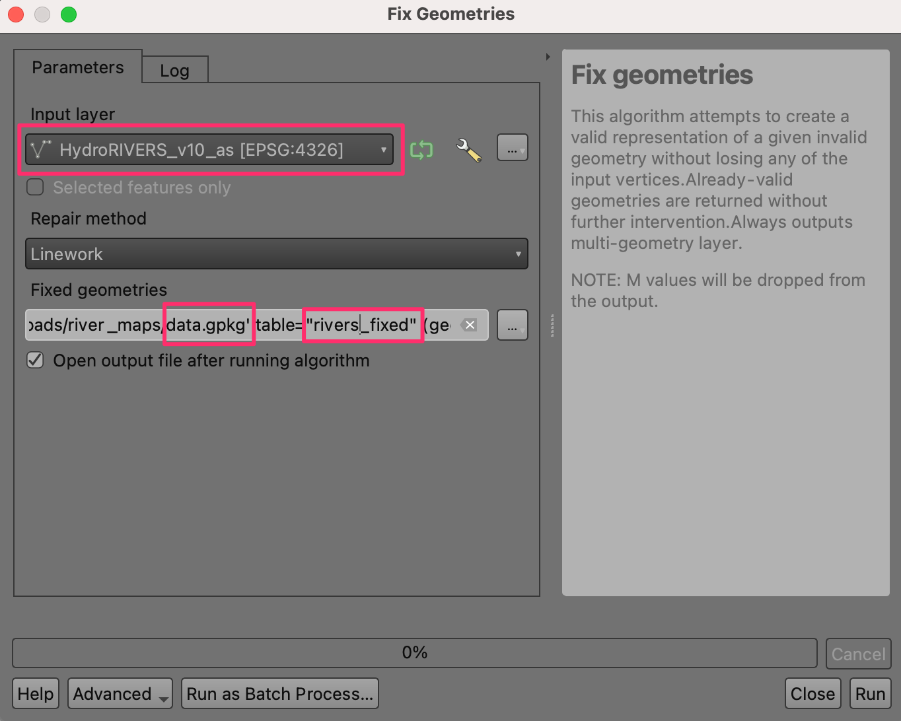
لایه
polymap15m_areaبا طرح ریزی ارائه می شود که توسط QGIS شناسایی نمی شود. ما یک طرح مشخص به این لایه اختصاص می دهیم. ابزار :menuselection:'Vector general --> Assign projection' را جستجو و پیدا کنید و برای باز کردن آن دوبار کلیک کنید.

توجه
به یاد داشته باشید که ابزار Assign projection لایه را دوباره طرح نمی کند، بلکه به سادگی اطلاعات طرح ریزی صحیح را به یک لایه ارجاع داده شده موجود با طرح ریزی گم شده یا نادرست اضافه می کند. اگر می خواهید CRS یک لایه را تغییر دهید از ابزار Reproject layer استفاده کنید.
"Polymap15m_area" را به عنوان :guilabel:"لایه ورودی" انتخاب کنید. روی دکمه :guilabel:'Select CRS' کلیک کنید و طرح "EPSG:7755 - WGS 84 / India NSF LCC" را جستجو کنید و آن را انتخاب کنید. روی دکمه ... در کنار CRS اختصاص داده شده کلیک کنید و :guilabel:`Save to GeoPackage... را انتخاب کنید.

همان GeoPackage «data.gpkg» را انتخاب کنید و نام لایه «admin_boundary_fixed» را وارد کنید. روی Run کلیک کنید.

اکنون 3 لایه جدید «حوضه_تثبیت شده»، «ریورس_تثبیت شده» و «محدودیت_مدیریت ثابت شده» را خواهید داشت که در پنل لایه ها در QGIS بارگذاری شده اند. کلید :kbd:`Shift را نگه دارید و تمام لایه های باقیمانده را انتخاب کنید. کلیک راست کرده و :guilabel:`Remove Layer... را انتخاب کنید.

اکنون لایه های حوضه ها و رودخانه ها را به مرز اداری می بندیم. ابزار :menuselection:'Vector overlay --> Clip' را از جعبه ابزار پردازش جستجو و پیدا کنید. برای باز کردن آن دوبار کلیک کنید.

«basins_fixed» را بهعنوان :guilabel: «لایه ورودی» و «admin_boundary_fixed» را بهعنوان :guilabel: «لایه روکش» انتخاب کنید. خروجی را در همان GeoPackage «data.gpkg» به عنوان لایه «basins_clipped» ذخیره کنید. روی Run کلیک کنید.

پس از پایان پردازش، فرآیند را با لایه «rivers_fixed» به عنوان :guilabel:` لایه ورودی تکرار کنید. خروجی را در همان geopackage «data.gpkg» به عنوان لایه «rivers_clipped» ذخیره کنید. روی Run کلیک کنید.

اکنون 2 لایه جدید «basins_clipped» و «rivers_clipped» و همچنین لایه «admin_boundary_fixed» در پنل Layers در QGIS بارگذاری شده است. کلید :kbd:`Shift را نگه دارید و تمام لایه های باقیمانده را انتخاب کنید. کلیک راست کرده و :guilabel:`Remove Layer... را انتخاب کنید.
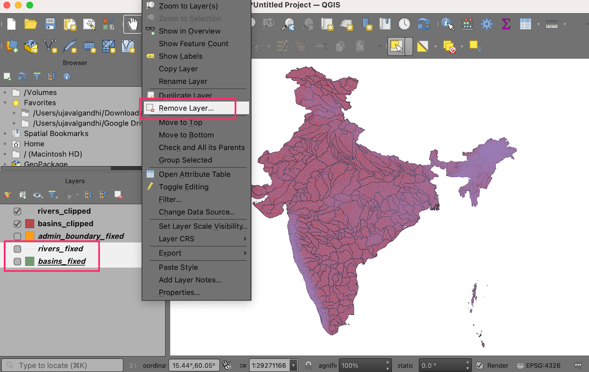
قبل از اینکه ادامه دهیم، اجازه دهید پروژه را ذخیره کنیم. QGIS به شما این امکان را می دهد که یک پروژه را در داخل یک GeoPackage ذخیره کنید - این کار را برای جلوگیری از مدیریت فایل های اضافی بسیار راحت می کند. به بروید.

در گفتگوی :guilabel:"ذخیره پروژه در GeoPackage"، روی دکمه :guilabel:"..." در کنار :guilabel:"Connection" کلیک کنید و فایل "data.gpkg" موجود را مرور کنید. نام
rivers_basin_mapرا به عنوان نام Project وارد کنید. روی :guilabel:`OK کلیک کنید.
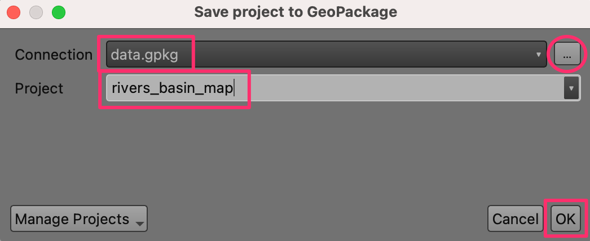
پس از ذخیره، میتوانید «data.gpkg» را در پنل :guilabel:`Browser گسترش دهید و ببینید که پروژه QGIS اکنون در GeoPackage ذخیره شده است. کاربران این GeoPackage اکنون می توانند پروژه را مستقیماً از GeoPackage باز کنند.

برای ایجاد نقشه رنگی خود، باید همه حوضه ها را طوری رنگ کنیم که هیچ حوضه مجاور هم رنگ نباشد. QGIS ابزاری برای این کار دارد. ابزار :menuselection:'Cartography --> Topological Coloring' را از جعبه ابزار پردازش باز کنید.

"basins_clipped" را به عنوان :guilabel:"لایه ورودی" انتخاب کنید. گزینه های دیگر را به مقادیر پیش فرض خود رها کنید. خروجی را در همان GeoPackage "data.gpkg" به عنوان لایه "basins_with_color" ذخیره کنید. روی Run کلیک کنید.

پس از پایان پردازش، یک لایه جدید «حوضه_با_رنگ» در پنل :guilabel:`Layers بارگذاری می شود. روی لایه کلیک راست کرده و :guilabel:'Open Attribute Table' را انتخاب کنید. متوجه خواهید شد که لایه دارای ویژگی جدیدی به نام "color_id" با مقدار صحیح است. اختصاص یک رنگ منحصر به فرد به هر عدد صحیح منجر به رنگ آمیزی توپولوکال لایه می شود.
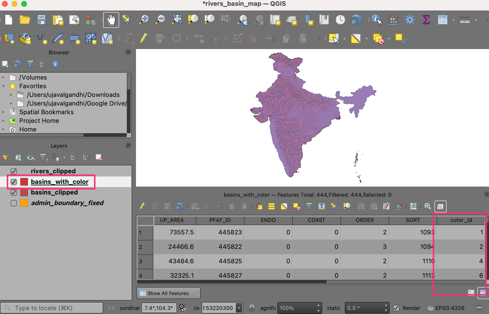
ما می خواهیم شناسه رنگ حوضه را به تمام رودخانه های موجود در آن منتقل کنیم. ابزار :menuselection:'Vector general --> Join features by location' را از جعبه ابزار پردازش باز کنید.

در اینجا میخواهیم «rivers_clipped» را بهعنوان لایه :guilabel: «پیوستن به ویژگیهای in» و «basins_with_color» را بهعنوان لایه برای :guilabel: «با مقایسه با» انتخاب کنیم. در قسمت Fields to add روی دکمه ... کلیک کنید و قسمت
color_idرا انتخاب کنید. خروجی را در geopackage "data.gpkg" به عنوان لایه "rivers_with_color" ذخیره کنید. روی Run کلیک کنید.

پس از پایان پردازش، یک لایه جدید «rivers_with_color» در پنل :guilabel:`Layers بارگذاری می شود. اکنون زمان اعمال نمادشناسی است. لایه "admin_boundary_fixed" را انتخاب کنید و روی دکمه :guilabel:"Open Layer Styling Panel" در پنل :guilabel:"Layers" کلیک کنید. رنگ را به مشکی تغییر دهید.

سپس لایه «رودخانههای_با_رنگ» را انتخاب کرده و رندر «طبقه شده» را انتخاب کنید.

"color_id" را به عنوان :guilabel:"Value" انتخاب کنید و روی :guilabel:"Classify" کلیک کنید. خواهید دید که رودخانه ها در حوضه های مختلف رنگ متفاوتی به خود اختصاص می دهند.
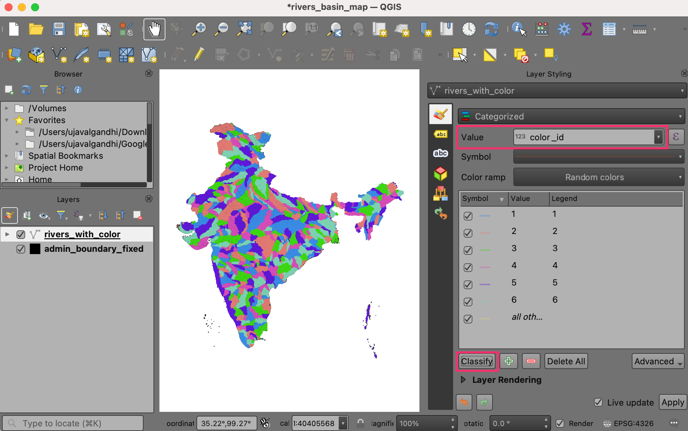
توجه
"color_id" را به عنوان :guilabel:"Value" انتخاب کنید و روی :guilabel:"Classify" کلیک کنید. دید که رودخانه ها در حوضه های مختلف رنگ های متفاوت به خود اختصاص می دهند.
خطوط پیش فرض برای نقشه ما خیلی ضخیم هستند. بیا عوضش کنیم کلید Shift را نگه دارید و تمام نمادهای موجود در لیست را انتخاب کنید. روی :guilabel:`Symbol کلیک کنید تا :guilabel:`Symbol Settings باز شود.

روی :guilabel:'Simple Line' کلیک کنید و عرض stroke را به
0.1تغییر دهید. اکنون نقشه بسیار بهتر به نظر می رسد.
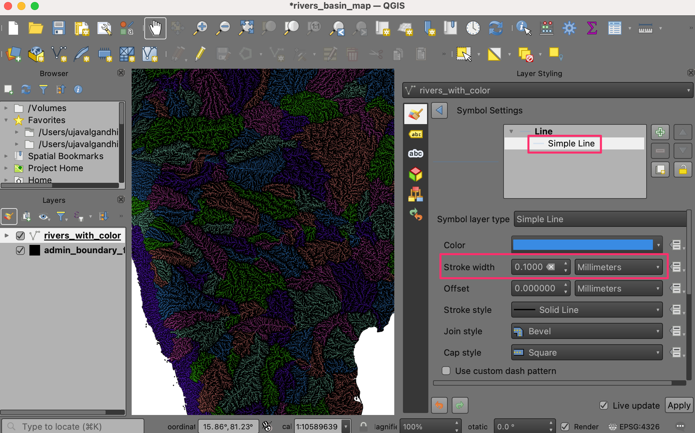
ما می توانیم نقشه را با اختصاص عرض های مختلف به رودخانه ها بر اساس اندازه آنها بهبود دهیم. لایه «رودخانههای_با_رنگ» دارای یک فیلد «ORD_STRA» است که حاوی مقدار «نظم Strahler <https://en.wikipedia.org/wiki/Strahler_number>»_ رودخانه است. هرچه این عدد بزرگتر باشد، رودخانه بزرگتر است. ما از Assistant استفاده خواهیم کرد تا به ما کمک کند تا از مقدار دستور strahler در عرض ضربه مناسب استفاده کنیم. روی دکمه :guilabel:'Oride defined data' در کنار :guilabel:'Stroke width' کلیک کنید و :guilabel:'Assistant...' را انتخاب کنید.

در بخش ورودی، فیلد "ORD_STRA" را به عنوان :guilabel:"منبع" با :guilabel:"مقادیر از""1" تا :guilabel:"به" "6" انتخاب کنید. . در بخش :guilabel:`Output Size from را به عنوان
0.05و to را به عنوان0.2انتخاب کنید. با وارد کردن مقادیر، نقشه به صورت پویا به روز می شود. ممکن است مجبور شوید این مقادیر را بسته به منطقه خود تنظیم کنید. هنگامی که از نقشه راضی شدید، روی دکمه Back کلیک کنید.
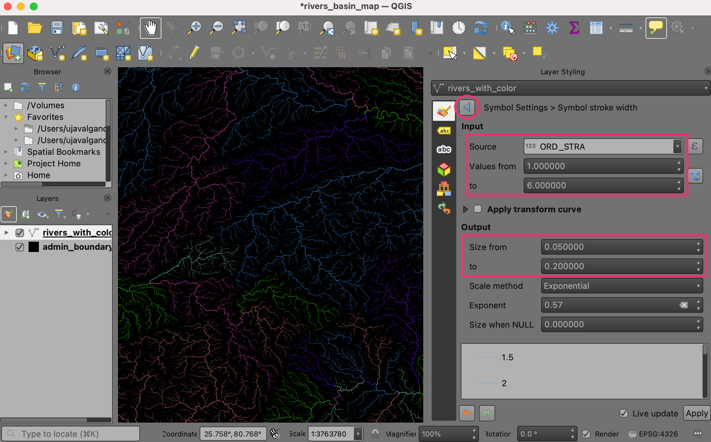
متوجه خواهید شد که دکمه :guilabel:`بازگردانی تعریف شده دادهها برای :guilabel:`عرض ضربه، اکنون زرد است، که نشان میدهد یک لغو فعال برای این تنظیم اعمال شده است.

نقشه حوضه رودخانه رنگی ما اکنون آماده است. بیایید این نقشه را در یک طرح قرار دهیم تا بتوانیم یک نسخه با وضوح بالا را با سایر عناصر نقشه صادر کنیم. به بروید. وقتی از شما خواسته شد نامی را وارد کنید، آن را خالی بگذارید و روی OK کلیک کنید.

در پنجره Layout 1 روی بوم خالی کلیک راست کرده و Page Properties... را انتخاب کنید.

"A4" را به عنوان :guilabel:"Size" انتخاب کنید. رنگ Background را به مشکی تغییر دهید.

به بروید.

دکمه سمت چپ ماوس را نگه دارید و منطقه ای را روی بوم انتخاب کنید که می خواهید نقشه در آن قرار گیرد.

هنگامی که نقشه ظاهر شد، در برگه :guilabel:'Item Properties' به پایین اسکرول کنید و :guilabel:'Background' را خاموش کنید.

توجه
اگر برگه :guilabel: ویژگی های آیتم را نمی بینید یا به طور تصادفی آن را نمی بندید، می توانید با رفتن به در منوی Layout آن را برگردانید.
بیایید وسعت نقشه را تنظیم کنیم. روی دکمه :guilabel:'Interactively Edit Map Extent' کلیک کنید و سپس از ماوس برای حرکت نقشه استفاده کنید. همچنین می توانید از چرخ اسکرول خود برای تنظیم زوم استفاده کنید. اگر می خواهید کنترل دقیق تری روی Zoom داشته باشید، مقدار Scale را به صورت دستی تنظیم کنید. تا زمانی که از قرارگیری نقشه راضی باشید این کار را تکرار کنید.

سپس یک لوگوی QGIS به نقشه اضافه می کنیم. به بروید.

یک مستطیل در جایی که می خواهید لوگو قرار دهید بکشید. در گفتگوی :guilabel: ویژگی های مورد، گروه آیکون :guilabel:`logos را پیدا کنید. لوگوی "ساخته شده با QGIS" را انتخاب کنید.

بعد، ما یک برچسب با اعتبار داده ها اضافه می کنیم. به بروید. متن را برای اعتبار داده ها وارد کنید و تراز قلم و برچسب را تنظیم کنید.

هنگامی که برای صادرات نتایج آماده شدید، به :menuselection:` Layout --> Export as Image...` بروید. به پوشه ای در رایانه خود بروید که می خواهید تصویر PNG را در آن ذخیره کنید و نام
river_basins.pngرا وارد کنید.

"300 dpi" را به عنوان :guilabel:"Export وضوح" انتخاب کنید و روی :guilabel:"Save" کلیک کنید.
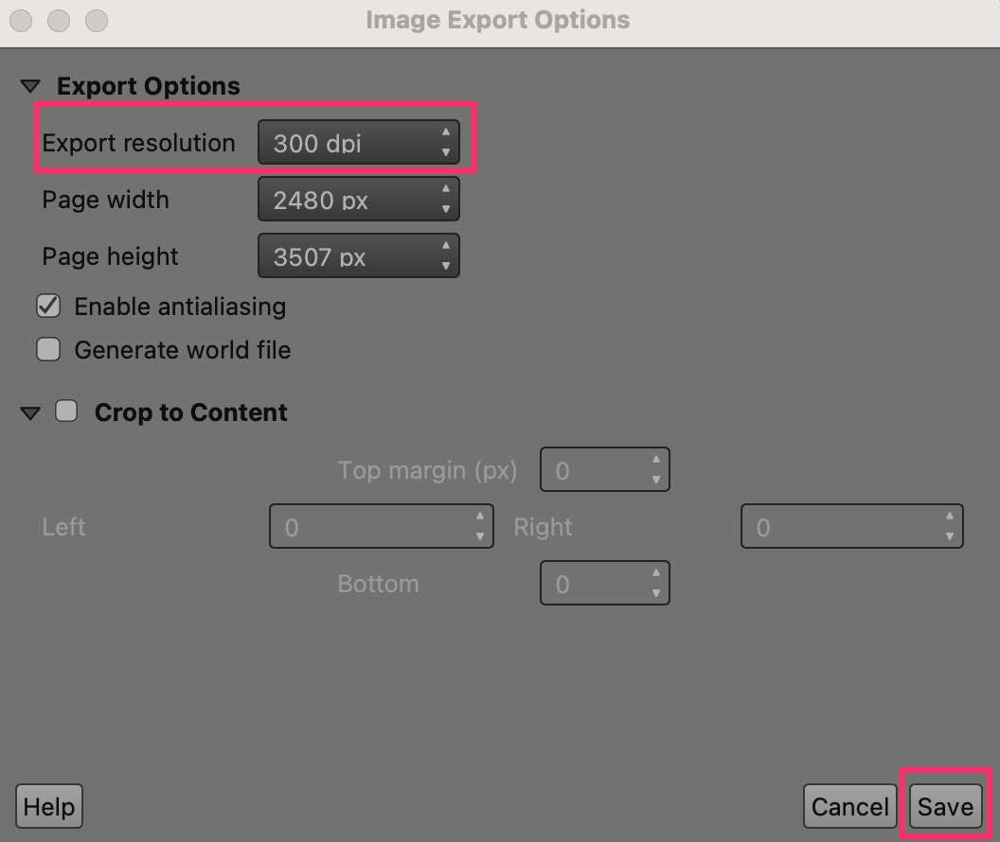
پس از اتمام صادرات، تصویر نقشه نهایی خود را در مکان انتخابی خواهید داشت.
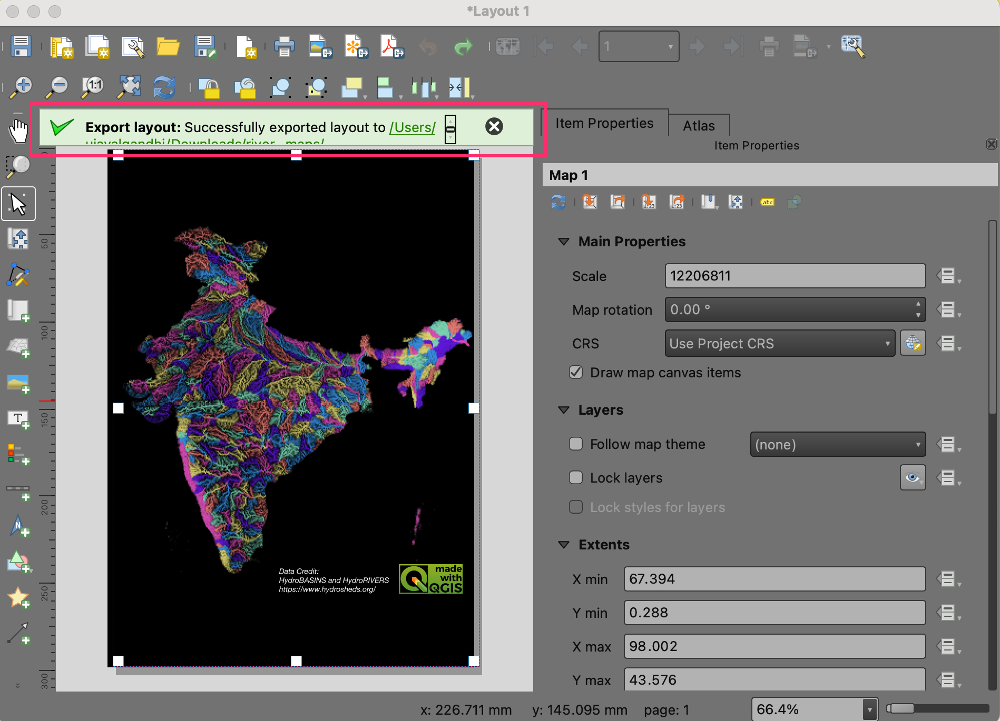
در اینجا تصویر نهایی PNG است که با استفاده از QGIS و مجموعه داده های باز ایجاد کردیم.

If you want to give feedback or share your experience with this tutorial, please comment below. (requires GitHub account)